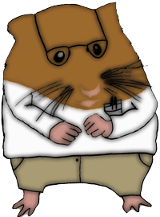

{% block header %}
<!DOCTYPE html PUBLIC "-//W3C//DTD XHTML 1.0 Transitional//EN" "http://www.w3.org/TR/xhtml1/DTD/xhtml1-transitional.dtd">
<html xmlns="http://www.w3.org/1999/xhtml">
<head>
<meta http-equiv="Content-Type" content="text/html; charset=UTF-8" />
<title>{{ title }}</title>
<script type="application/javascript" src="https://ajax.googleapis.com/ajax/libs/jquery/1.4.4/jquery.min.js"></script>
<style>
	.biggreen {color:green;font-size:1.2em;}
	#italic {font-style:italic;}
</style>
<script src='textile.js'></script>
<script>
	function do_convert() {
		var html = convert(document.getElementById('textile').value);
		document.getElementById('preview').innerHTML=html;
	}
</script>
<link href="main.css" rel="stylesheet" type="text/css" />
</head>
<body>
	<div class="header">
				<table class="center">
					<tr>
						<td>
							
						</td>
						<td>
							<div class="name">
								<h1>B'ham Tech Events</h1>
							</div>
							<br />
							A place to discover tech events in and around Bellingham, Washington.
						</td>
					</tr>
				</table>
			</div>
{% endblock %}

{% block textile_editor %}
<table class="textile-editor">
	<tr>
		<td>
			<form>
				<textarea id="textile" name='txtl' onKeyUp="do_convert()" rows='20' cols='50' />
			</form>
			<a href="http://redcloth.org/hobix.com/textile/quick.html#writing-in-textile" target="_blank">Textile reference</a>
		</td>
	</tr>  
	<tr>
		<td>
			<div class="preview">
			</div>
		</td>
	</tr>
</table>
{% endblock %}